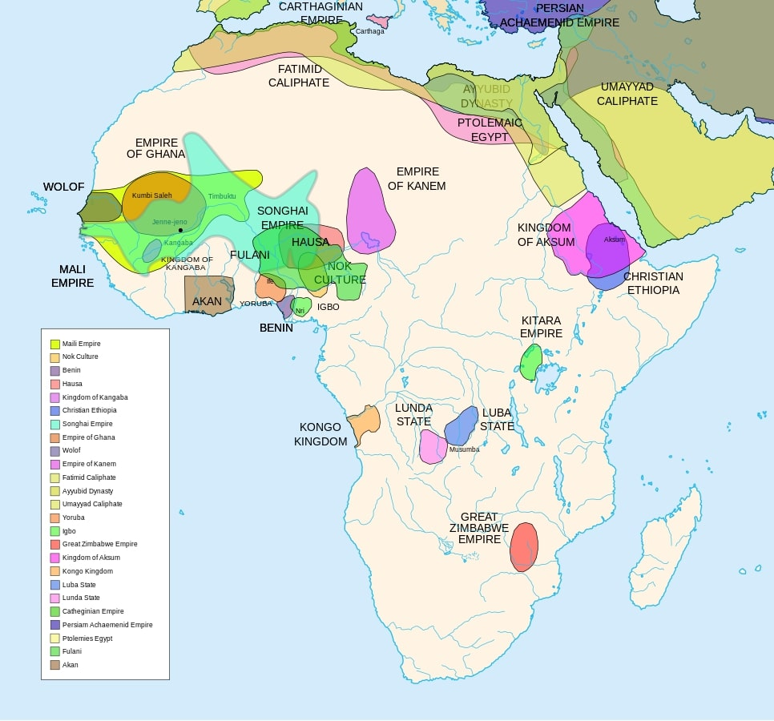

History
Africa, the ‘Mother Continent of Humanity’, the ‘Cradle of Civilization’, these are monikers given to describe Africa for different reasons. But there is one moniker that was used during the colonial era – the ‘Dark Continent.’ This name was coined by the Europeans because of two main reasons: the continent’s vast landscapes, diverse cultures, and complex societies were largely unexplored and misunderstood; and Africa was primitive and uncivilized ignoring the rich histories and advanced civilizations existing prior. This second reason was part of the mentality that Europeans were the superior humans/race which can be linked to the Slave Trade.

How did colonialism start in Africa? Colonialism began on the onset of the Scramble of Africa. This started in the early 1800s. After realizing the wealth from the resources in the Africa continent, the race for Africa colonies began. European countries who were at butt with each other aimed not to bring the dispute over the colonies they had in Africa. And to further prevent any future conflict, the Berlin Conference of 1884 - 1885 was initiated by German Chancellor, Otto von Bismarck, to discuss and set the rules and regulations concerning the conquest of Africa. The countries in participation included Germany, Austria Hungary, Belgium (International Congo Society), Spain, Denmark, U.S.A, France, U.K, Italy, Netherlands, Portugal, Russia, Sweden-Norway, and the Ottoman Empire. The issues discussed included the end of slave trade, the expansion of missionary activities, imperial powers acknowledgment of Leopold II of Belgium’s administration of the Congo Free State (modernly known as the Democratic Republic of Congo – DRC), agreement to remain in constant communication with each other, and the creation of a region along the Congo River to be a neutral area and free of all trade and naval restrictions (World History Edu, 2023). This event formalized the Scramble of Africa to which Europe Control of Africa grew over the years from about 10% to 90%. This happened through violence and subjugation, and manipulation and trickery.

This enforced colonialism in Africa, but after World War I & II, the Great Depression, etc., the period of decolonization began in Africa. This period of decolonialization lasted from the mid-1950s to 1975. New Africa political movements began to rise led by nationalists who were educated under the European education. Also, European belief on the superior mindset began to change, which made it easier for the progress of liberation movements. The liberation movements struggled with their literal sweat and blood regardless of the culture change toward Africa in Europe.
But most European powers were not enthusiastic about losing control over their “colonies.” Some nations like the United Kingdom, were willing to give the independent nations to develop. Other nations like France, and Belgium compromised to have puppet states. In all, the emergence of neocolonialism began in Africa.
During the Cold War, Africa among other continents or regions became an unspoken battlefield between the U.S and the Soviet Union. Independent nations were scrutinized or their government overthrown by the U.S if there was evidence or suspicion of aligning with the Soviet Union. This formalized neocolonialism in Africa. The U.S claims that their influence in Africa was to contain the spread of Communism. But their influence grew into soft power/control over nations in Africa. Atrocities committed by U.S. allies were swept under the carpet under the cover of War on Communism.